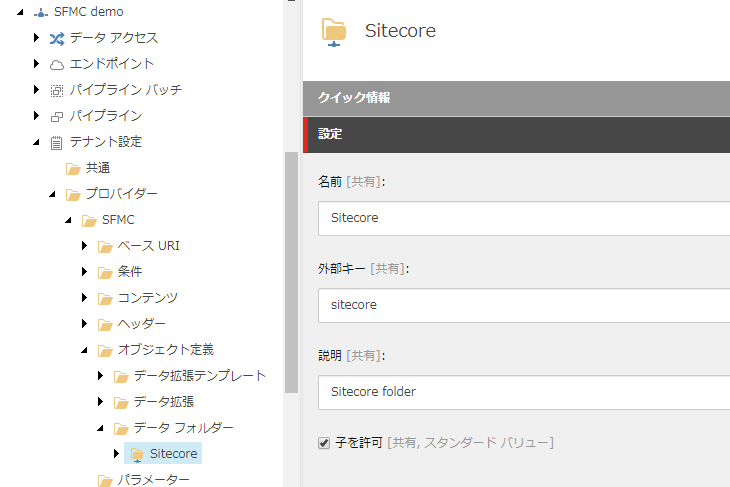
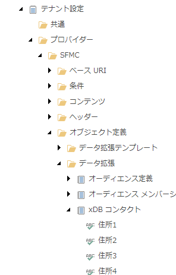

2.6. Sitecore Connect for SFMC - Behavioral Data Exchange¶
この文書では、 Sitecore Connect for Salesforce Marketing Cloud 3.0 のモジュールのうち、Behavioral Data Exchange に関するセットアップの手順を紹介しています。
注釈
Sitecore Connect for Salesforce Marketing Cloud 3.0 は Sitecore Experience Platform 9.2 向けのモジュールとなります。Sitecore 9.0, 9.0.1, 9.1 を利用されている方は、別のバージョンのモジュールをご利用ください。
2.6.1. 必要システム¶
Behavioral Data Exchange 3.0 は、以下の環境で利用することが可能です。
Sitecore Experience Platform 9.2.0
Salesforce Marketing Cloud の管理者権限
すでに上記の環境が整っていることを前提として、インストール、設定に関して紹介をしていきます。
2.6.2. モジュールのインストール¶
以下の手順でインストールを進めていきます。
モジュールを Sitecore Connect for Salesforce Marketing Cloud 3.0 にある Behavioral Data Exchange の Installation Package をクリックしてダウンロードをします。
インストールをする Sitecore の環境に管理者権限でログインをします
「コントロールパネル」－「管理」パネル－「パッケージをインストールする」を開きます
ダウンロードしたモジュールのインストールをします
{kind=link}
5．インストールの手順を確認します。

ファイルの上書きの警告が出た場合は、「はい」を選択してください。
インストールの手順で紹介されていた、「サイトコア クライアントを再起動します。」をチェックしてブラウザ側の設定をリセットします。
{kind=link}
コンテンツエディターを開いて、 /sitecore/system/Data Exchange のアイテムを右クリック、SFMC テナント用接続 を選択できるようになっている段階で、モジュールのインストールは成功しています。

2.6.3. Salesforce Marketing Cloud との接続¶
Salesforce Marketing Cloud にて以下の設定を進めていきます。
2.6.3.1. Salesforce Markering Cloud API 連携の設定¶
以下の手順で API 連携を作成します。
注釈
API 連携に関しては、すでに Sitecore Connect for SFMC - Content Exchange で作成している場合は共有することができます。この場合、アクセス権に関して既存の設定に追加してください。
右上に表示されているアカウントにマウスカーソルを合わせて、表示されたメニューの「セットアップ」をクリックします。
左側のメニューの「プラットフォームツール」－「アプリ」－「インストール済パッケージ」をクリックします。
右上にある「新規」のボタンをクリックして、新しいパッケージを作成します。
新しいパッケージの詳細のダイアログでアプリケーションの名前を設定してください。
{kind=link}
コンポーネントの追加をクリックします

API 連携を選択して「次へ」をクリックします。
{kind=link}
サーバー間連携を選択して「次へ」をクリックします。

コンポーネントの追加の画面では、以下の権限を設定してください。
カテゴリ |
タイプ |
権限 |
|---|---|---|
Data |
Data Extensions |
Read and Write |
{kind=link}
設定が終わったら保存して、API 連携の設定は完了です。
2.6.3.2. Sitecore Connection String の設定¶
Sitecore の設定としては、Salesforce Marketing Cloud で作成をしたパッケージを利用して接続文字列を作る必要があります。接続文字列のサンプルは以下の通りです。
<add name="sfmc" connectionString="client id=Client Id;
client secret=Client Secret;
auth endpoint=Authentication Base URI;
rest endpoint=REST Base URI;
soap endpoint=SOAP Base URI" />
パラメーターは作成したパッケージから、以下の項目をそのまま反映させてください。
ConnectionString の表記 |
パッケージの表記 |
|---|---|
Client Id |
クライアント ID |
Client Secret |
クライアントシークレット |
Authentication Base URI |
認証ベース URI |
REST Base URI |
REST ベース URI |
SOAP Base URI |
SOAP ベース URI |
ConnectionString の変更が終わったタイミングで、Sitecore のインスタンスを再起動して反映させます。
2.6.4. テナントの設定¶
2.6.4.1. テナントの作成¶
Sitecore の設定を追加していきます。
コンテンツエディターを開いて、 /sitecore/system/Data Exchange のアイテムを右クリック、SFMC テナント用接続 を選択してください。
テナントの名前を決めます

自動的に必要とされるアイテムが作成されます。

作成したテナントアイテムを選択、「コンテンツ」タブを開いて Enabled をクイックしてください。
{kind=link}
アイテムを保存します
2.6.4.2. エンドポイントの設定¶
作成したテナントに必要な値を追加していきます。
作成したテナントの name>/Endpoints/Providers/SFMC/SFMC Endpoint のアイテムを選択します
接続文字列名の項目に sfmc を記入します（異なる接続文字列の場合は、設定している値にしてください）。

「データ交換」のタブにあるボタン「トラブルシューティングツールを実行」をクリックしてください。

「接続が正常に確立されました」と表示されれば、設定が正しい形となります。
{kind=link}
2.6.4.3. xConnect のエンドポイントの設定¶
ここでは xConnect の接続に関して確認をします。
作成したテナントの /Endpoints/Providers/xConnect/xConnect Client Endpoint のアイテムを選択します。
以下の項目が設定されていることを確認します。
フィールド名 |
設定値 |
|---|---|
コレクション モデル |
コレクションモデル/デフォルト/デフォルトコレクションモデル |
コレクション サービス接続文字列名 |
xconnect.collection |
コレクション サービス証明書の接続文字列名 |
xconnect.collection.certificate |
{kind=link}
「データ交換」のタブにあるボタン「トラブルシューティングツールを実行」をクリックしてください。
「接続が正常に確立されました」と表示されれば、設定が正しい形となります。
{kind=link}
{kind=link}
2.6.5. Sitecore のデータと Salesforce Data Extensions のリンク¶
実際に利用するにあたって、Sitecore のデータと Salesforce Marketing Cloud と連携させる必要があります。ここではその手順を紹介します。
注釈
パイプラインバッチの「設定 - SFMC アカウントインフラストラクチャー」、「xConnect コンタクトをプッシュ」、「マーケティングリストをプッシュ」を実行してください。
2.6.5.1. コンタクトデータのリンク作成¶
Salesforce Marketing Cloud にログインをします。
Audience Build の項目にある Contact Builder を実行します
{kind=link}
データデザイナーが起動します
{kind=link}
「属性グループの作成」をクリックします
属性グループに名前を設定します。アイコンはわかりやすいものを選択してください。
{kind=link}
作成した属性グループにおいて「データエクステンションのリンク」をクリックします。
{kind=link}
新しいウィンドウで /Data Extensions/Sitecore を選択、xDB Contact をクリックします
{kind=link}
顧客データの「Contact Key」とxDB Contact の「contactKey」をリンクさせます。右上にある設定は「One」を選択してください。
{kind=link}
「保存」をしてコンタクトデータのリンク作成を完了させます
2.6.5.2. コンタクトデータをメンバーシップデータに拡張する¶
上記の手順から続けて、Sitecore の属性グループを編集していきます。
作成した属性グループを開きます
xDB Contact の右上にある拡張ボタンをクリックします。
{kind=link}
データエクステンションのリンク、の画面で 「データエクステンション」－「Sitecore」－「Journeys」の下にある Audience Membership を選択します
{kind=link}
xDB Contact の設定は「One」を選択したまま contactKey を選択、Audience Membership に関しては Many を選択した上で Contact Key を選択できるようになっている段階で、モジュールのインストールは成功しています。
{kind=link}
作成をした Audience Membership の拡張リンクをクリックして、右側のダイアログでは「Sitecore」ー「Journeys」の下にある Audience Definition を選択します。
{kind=link}
Audiende Membership の項目は Many の Segment Id を、合わせて Audience Definition も Many の Segument Id を選択してください。
{kind=link}
これで作成は完了です。
2.6.6. パイプラインバッチについて¶
ここからはパイプラインバッチの設定について紹介していきます。なお、Sitecore 側の設定に関しては作成したテナントの Providers/SFMC/Object Definitions/Data Folders のアイテムに設定が入っているため、外部キーなどを変更する必要があれば、このアイテムを変更してください。
{kind=link}
2.6.6.1. xConnect コンタクトをプッシュ¶
/Data Extension/Sitecore に設定されています。
標準では xDB のコンタクトと以下の項目が連携します。
Personal info
Preferred email address
Preferred phone number
Preferred address
Engagement measures
2.6.6.2. マーケティングリストをプッシュ¶
以下の項目がプッシュで展開されます。
SFMC アプリケーション |
プッシュデータ |
SFMC におけるデータ拡張 |
|---|---|---|
Journey Builder |
List definitions |
Audience Definitions, in /Data Extensions/Sitecore/Journeys |
Journey Builder |
List memberships |
Audience Memberships, in /Data Extensions/Sitecore/Journeys |
Email Studio |
List definitions |
A separate data extension for each list, in /Data Extensions/Sitecore/Email |
Email Studio |
List memberships |
Contacts are stored in a flat format, in /Data Extensions/Sitecore/xDB Contacts |
2.6.6.3. xConnect コンタクトとマーケティングリスト¶
このパイプラインバッチは、 xConnect コンタクトのプッシュ と マーケティングリストをプッシュ を実行するバッチです。
{kind=link}
{kind=link}
{kind=link}
{kind=link}
{kind=link}